A
Abbandonare:
scelta dolorosa di un giocatore che trovandosi in netta
inferiorità di posizione/materiale riconosce la vittoria
dell'avversario e fa terminare la partita. Spesso questa azione
si riscontra quando la parte vittoriosa sta per dare un matto
imparabile.
Acconcio:
parola che va detta prima di poter toccare un pezzo che non si
vuole muovere al fine di aggiustarne la posizione sulla casa
dove è situato. Se il tocco viene effettuato senza preavviso si
è costretti a muovere il pezzo toccato.
Adescamento:
sacrificio che ha lo scopo di costringere un pezzo avversario a
muovere in una posizione svantaggiosa.
Aggiornare:
il posticiparsi di una partita non conclusa. Il giocatore che ha
la mossa la scrive su un foglio sigillato: questa mossa verrà
giocata quando riprenderà la partita.
Ala:
metà della scacchiera destra o sinistra. L'ala di donna è
composta dalle colonne a b c d, l'ala di re è composta dalle
colonne e f g h.
Alfiere:
pezzo degli scacchi che vale approssimativamente 3 pedoni. Si
muove in 4 direzioni lungo le diagonali, lo spostamento è
limitato in distanza dalla presenza di altri pezzi che non
possono essere scavalcati.
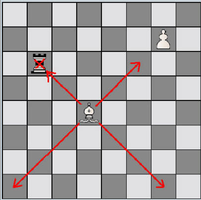
Alfiere cattivo:
detto di un alfiere che è ostacolato nei movimenti dai pedoni
del proprio colore. Spesso viene cambiato eliminandone così la
debolezza.
Alfieri di colore opposto:
succede in una partita in cui le opposte parti rimangono con un
alfiere ciascuna di colore opposto. I finali di questo tipo
(senza altri pezzi in gioco ad eccezione di re e pedoni) sono in
genere destinati ad una patta.
Andare a donna (dama):
mossa che porta un pedone dalla settima all'ottava ed ultima
traversa (dalla seconda alla prima per il nero). Il pezzo in
questione viene "promosso" cioè trasformato in un altro pezzo
(ad eccezione del re) scelto del possessore del pezzo. Il pedone
non può rimanere pedone ma viene di solito trasformato in regina
e raramente in cavallo.
Annotazione:
commento ad una partita di scacchi che indica possibili mosse
alternative e loro risultato.
Aperta:
una colonna, diagonale o traversa viene detta aperta quando è
sgombra da pedoni. Vedi anche Gioco aperto.
Apertura:
fase iniziale della partita precedente al mediogioco nella quale
si sviluppano i pezzi. In genere lo scopo è quello di guadagnare
il controllo del centro scacchiera. Essendo il numero di
combinazioni di mosse di apertura buone piuttosto limitato
esiste una teoria che le classifica rigorosamente (ECO
Enciclopedia delle aperture degli scacchi), le novità comunque
si susseguono giorno dopo giorno.
Arbitro:
una persona che durante la partita assicura che le regole
vengano rispettate, supervisiona il gioco, impone penalità ai
giocatori che infrangono le regole.
Arrocco:
mossa riservata alla coppia re e torre, rappresenta l'unico caso
in cui si possono muovere più pezzi in una mossa sola. L'arrocco
corto si fa spostando il re dalla casa e1 alla g1 (da e8 a f8
per il nero) e contemporaneamente la torre dalla casa h1 alla f1
(da h8 a f8 per il nero). L'arrocco lungo si fa spostando il re
dalla casa e1 alla c1 (da e8 a c8 per il nero) e
contemporaneamente la torre dalla casa a1 alla d1 (da a8 a d8
per il nero). L'arrocco non può essere fatto nelle seguenti
condizioni:
- il re è sotto scacco
- almeno una delle case dove deve transitare il re nel suo
movimento è minacciata da un pezzo avversario
- il re o la torre coinvolta nell'arrocco sono già state mosse
dall'inizio della partita
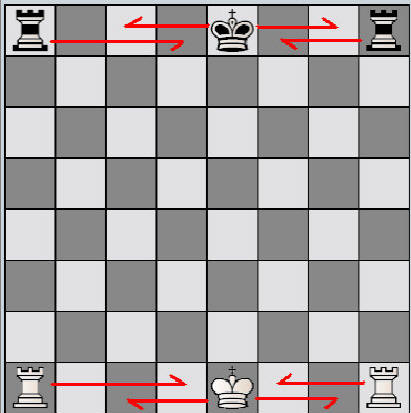
Arrocco eterogeneo:
avviene quando un giocatore arrocca corto e laltro arrocca
lungo.
Attaccare:
minaccia di presa su una casa o su un pezzo avversario.
Attacco di scoperta:
il movimento di un pezzo o pedone amico che lascia libera una
linea di attacco di un altro pezzo amico su un pezzo
dellavversario.
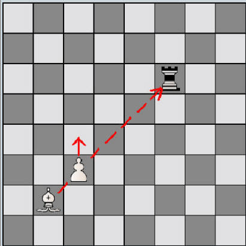
Avamposto:
una casa avanzata (nella metà della scacchiera più lontana dal
giocatore) protetta dai propri pezzi (in genere almeno un
pedone) dove poter insediare un cavallo o un alfiere.
B
Batteria:
il posizionamento di due o più pezzi lungo la stessa linea di
azione per rafforzarne lefficacia. Ad esempio regina ed alfiere
sulla stessa diagonale o torri sulla stessa colonna o traversa.
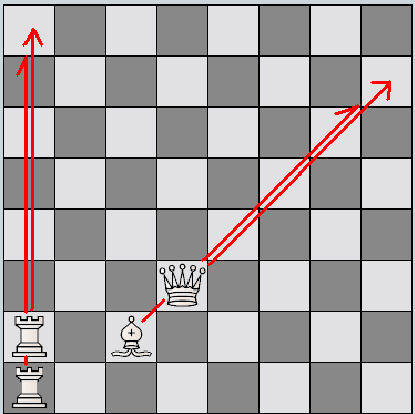
Blocco:
avviene quando i propri pedoni sono opposti a quelli avversari
in modo che non sia possibile passare con gli altri pezzi da una
parte all'altra dello schieramento. Il blocco è una
caratteristica delle partite "chiuse".
Buchholtz:
il nome di un tipo di metodo di punteggio per effettuare uno
spareggio.
Buco:
una casa dove un pezzo non potrà mai venir attaccato da un
pedone e quindi sarà difficilmente scacciabile.
C
Cambio:
ha luogo quando si prende un pezzo avversario contro uno proprio
dello stesso valore. E' opportuno cambiare pezzi quando siamo in
vantaggio materiale, per cercare di guadagnare spazio (case
controllate), quando si ricava un guadagno posizionale.
Casa:
uno dei 64 quadrati bianchi o neri che compongono la scacchiera.
Viene identificata nella notazione algebrica da una lettera
indicante la colonna di appartenenza e da un numero indicante la
traversa di appartenenza.
Casa debole:
una casa che non può essere difesa efficacemente. Le spinte di
pedone spesso creano case deboli proprio per il fatto che i
pedoni non possono tornare indietro in difesa.
Casa di fuga:
casa dove può spostarsi un pezzo (in genere il re) per sfuggire
ad un attacco.
Catena di pedoni:
disposizione di pedoni lungo una diagonale uno accanto all'altro
in modo che si possano difendere (sostenere) a vicenda.
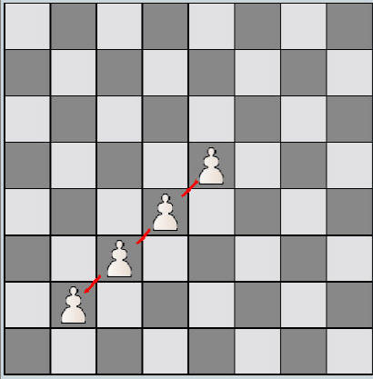
Cavallo:
pezzo degli scacchi che vale approssimativamente 3 pedoni. Si
muove a L due case in verticale e 1 in orizzontale o due case
in orizzontale e una in verticale. In tutto, al massimo, dalla
casa di partenza può giungere in otto case. Unico a possedere
questa caratteristica: lo spostamento non è limitato dalla
presenza di altri pezzi che possono essere scavalcati.
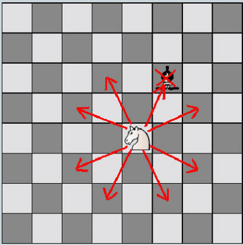
Centralizzazione:
portare un pezzo verso il centro della scacchiera in modo che
sia più offensivamente efficace.
Centro:
le quattro o sedici case poste al centro della scacchiera. E'
importante controllare questa regione per potervi insediare i
propri pezzi in modo che assumano il loro massimo potenziale
offensivo.
Colonna:
linea di case poste verticalmente. Vengono indicate con le
lettere dalla a alla h nella notazione algebrica.
Colonna aperta:
colonna nella quale non sono presenti pedoni.
Colonna chiusa:
colonna nella quale sono presenti pedoni di entrambi i colori.
Colonna semiaperta:
colonna nella quale non sono presenti pedoni propri ma solo
avversari.
Combinazione:
una serie di mosse forzate che conducono ad un vantaggio per il
giocatore che lha cominciata.
Compensazione:
un vantaggio che compensa uno svantaggio. Ad esempio si può
avere compensazione per un pedone sacrificato se la propria
posizione è migliorata nel processo.
Connettere le torri:
portare le torri sulla stessa colonna o traversa senza altri
pezzi in mezzo.
Consolidare:
mantenere possibilmente migliorandolo un vantaggio acquisito.
Contrattacco:
Attacco ad una regione lasciata scoperta dall'avversario che ha
concentrato i pezzi in un'altra regione della scacchiera.
Controllare una casa:
possedere uno spiegamento tale di pezzi che attaccano la casa in
questione in modo da evitare l'insediamento o il passaggio di
pezzi avversari. Spesso è sufficiente un pedone per poter
controllare una casa, per questo sono molto importanti le spinte
iniziali dei pedoni centrali al fine di controllare il centro.
Coppia di alfieri:
quando un giocatore possiede entrambi gli alfieri a differenza
dellaltro. In genere chi possiede la coppia di alfieri è
avvantaggiato.
Coprire uno scacco:
quando uno scacco viene fronteggiato interponendo un pezzo tra
il proprio re e il pezzo avversario che dà scacco. Gli scacchi
dati con i cavalli non possono essere coperti.
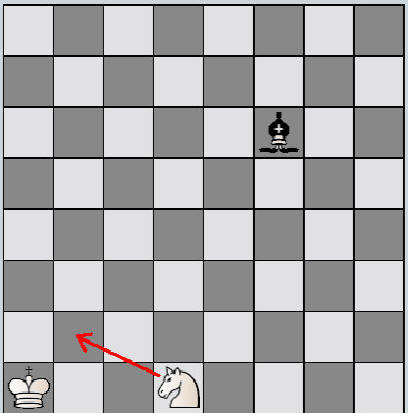
CM:
abbreviazione del titolo scacchistico Candidate Master.
D
Desperado:
un pezzo che è stato intrappolato e verrà inevitabilmente preso.
Il pezzo viene mosso col fine di causare il più grande danno
possibile allavversario.
Deviazione:
il provocare lo spostamento di un pezzo (ad esempio tramite un
sacrificio) in modo che abbandoni un punto difensivo chiave.
Diagonale:
fila di case posta in diagonale. Le grandi diagonali sono quelle
che vanno dalla casa a1 ala h8 e dalla a8 alla h1.
Doppio:
attacco doppio contemporaneo di un proprio pezzo a due pezzi
avversari.
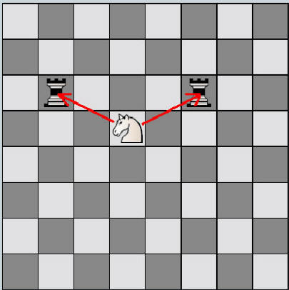
E
Eguaglianza:
si ha quando nessun giocatore ha un vantaggio di posizione o
materiale sull'altro.
En passant:
modo di presa proprio del pedone quando è posto in quinta
traversa (quarta per il nero) nel caso che l'avversario spinga
di due case il pedone di una delle due colonne adiacenti. Il
pedone mangia in diagonale spostandosi in sesta (terza per il
nero) traversa sulla colonna del pedone mangiato. Quindi questo
è l'unico caso in cui una presa non avviene sostituendo il pezzo
preso con il proprio. Questa mossa deve avvenire subito dopo la
spinta doppia altrimenti non sarà più possibile.
F
Fianchetto:
posizionamento di un alfiere nelle case b2 o g2 (b8 o g8 per il
nero) in modo che possa controllare una grande diagonale.
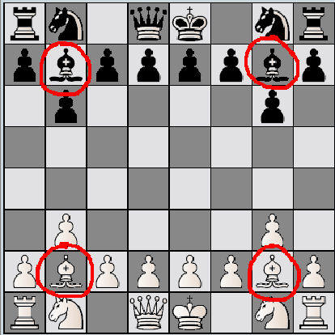
FIDE:
acronimo di Federation Internazionale Des Echecs, lorganismo
internazionale che governa il gioco degli scacchi.
Fila:
linea di case poste verticalmente. Vengono indicate con le
lettere dalla a alla h nella notazione algebrica.
Finale:
parte conclusiva di una partita che segue al mediogioco. Si
parla di finale quando a parte re e pedoni rimangono sulla
scacchiera solo pochi altri pezzi. Come per le aperture ma meno
categoricamente siccome il numero di combinazioni possibile
risulta più limitato è possibile inquadrare teoricamente questa
fase della partita.
Forchetta:
attacco doppio contemporaneo di un proprio pezzo a due pezzi
avversari.
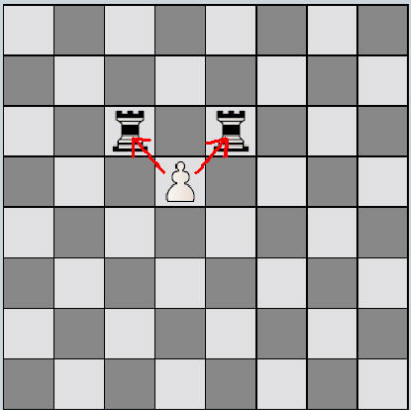
Forzato:
detto di mossa o combinazione che se non viene eseguita porta ad
una perdita di materiale o di posizione da parte di un giocatore
o addirittura allo scacco matto. Spesso capita che per
rispondere ad uno scacco ci sia una sola mossa legale che quindi
è forzata.
G
Gambetto:
sacrificio di un pedone in apertura per facilitare lo sviluppo
dei propri pezzi. Con i gambetti si concede un guadagno
materiale all'avversario in cambio di guadagno posizionale.
Gioco aperto:
posizione in cui vi sono molte linee aperte.
Gioco chiuso:
posizione in cui vi sono poche linee aperte.
GM:
abbreviazione del titolo scacchistico GrandMaster.
I
IM:
abbreviazione del titolo scacchistico International Master.
Impedonatura:
quando a causa di una presa da parte di un pedone si vanno a
posizionare due o più pedoni dello stesso colore su di una
colonna. In genere questo è una debolezza in quanto i due pedoni
non possono difendersi a vicenda e si ostacolano l'un l'altro.
Il processo inverso si chiama sdoppiatura o spedonatura.
Inchiodatura:
avviene quando un pezzo è minacciato e spostandosi lascerebbe in
presa un pezzo di maggior valore materiale.
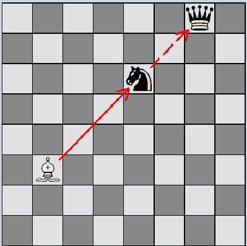
Infilata:
quando viene attaccato un pezzo di maggior valore che
spostandosi scopre lattacco su un pezzo di minor valore.
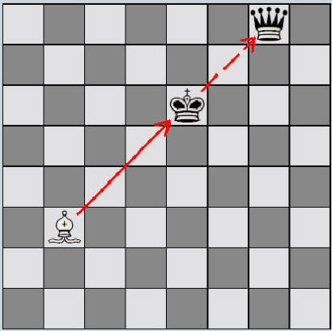
In presa:
detto di un pezzo che è situato su di una casa dove può essere
preso senza che il pezzo avversario possa essere ricatturato.
Interferenza:
sacrificare un pezzo per occludere una linea di difesa
allavversario.
Interporre:
quando una minaccia di attacco su un pezzo viene fronteggiata
interponendo un pezzo tra il pezzo minacciato e il pezzo
avversario che minaccia.
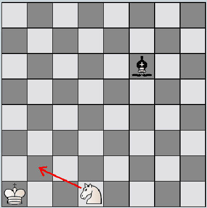
J
J'adoube:
parola francese (significa acconcio) che va detta prima di poter
toccare un pezzo che non si vuole muovere al fine di aggiustarne
la posizione sulla casa dove è situato. Se il tocco viene
effettuato senza preavviso si è costretti a muovere il pezzo
toccato.
L
Lampo:
tipo di partita di scacchi a tempo molto veloce.
Lato:
metà della scacchiera destra o sinistra. Il lato di donna è
composto dalle colonne a b c d, il lato di re è composto dalle
colonne e f g h.
Linea:
susseguirsi di case adiacenti in orizzontale, verticale o
diagonale.
M
Maestro (Master):
titolo FIDE riservato ai giocatori più forti di scacchi.
Materiale:
quantificazione della quantità e qualità dei pezzi presenti
sulla scacchiera nei due schieramenti. Ad ogni pezzo viene
attribuito un valore; pedone 1, cavallo e alfiere 3, torre 5,
regina 9. Il re in questa classifica non viene contato in quanto
ha un valore inestimabile: la sua caduta porta alla sconfitta.
Matto (scacco matto):
avviene quando non è possibile togliere dallo scacco il re. La
vittoria va al giocatore che ha dato scacco matto.
Matto affogato:
Matto dato dal cavallo che da scacco al re quando non ha case di
fuga.
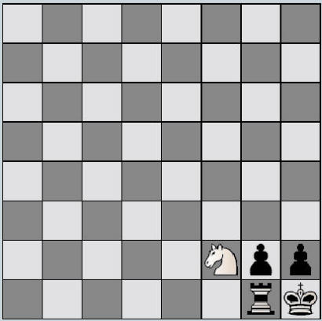
Mediogioco:
parte centrale di una partita viene dopo l'apertura e prima del
finale. In questa fase i contendenti cercano di guadagnare
materiale o posizione per giungere in un finale favorevole alla
propria parte.
Minacciare:
fare una mossa che, se non efficacemente controbattuta, potrà
portare lavversario alla perdita di materiale o della partita.
Ad esempio minacciare matto in tre mosse.
Mobilità:
indica la maggiore o minore capacità di un pezzo di muoversi
sulla scacchiera in funzione della posizione degli altri pezzi.
Mossa (tratto):
ogni singolo movimento dei pezzi bianchi e neri sulla
scacchiera. Per regolamento la prima mossa sta al condottiero
del bianco, a questa prima mossa segue una mossa del nero e così
via. Si deve muovere un solo pezzo per volta ad eccezione della
mossa dell'arrocco. Mossa debole: una mossa che non è tra le
migliori per la posizione considerata. Mossa cattiva o errata:
una mossa che causa perdita di materiale o posizione senza alcun
compenso. Mossa illegale o falsa: mossa che non è consentita dal
regolamento.
Mossa intermedia:
detto di mossa che viene fatta nel mezzo di una combinazione che
sembrava forzata e che migliora la posizione di chi la fa.
N
Norma:
il numero di punti che un giocatore deve archiviare in un torneo
internazionale per ottenere un certo titolo FIDE.
Notazione algebrica:
un sistema per registrare le mosse di una partita di scacchi: i
pezzi vengono indicati con una lettera (R re, D regina, T torre,
A alfiere, C cavallo) mentre lomissione della lettera indica
una mossa di pedone. La casa di arrivo del pezzo viene indicata
con la lettera relativa alla colonna (a,b,c,d,e,f,g,h) e il
numero della traversa (1,2,3,4,5,6,7,8). Inoltre: + scacco, #
scacco matto, = promozione a, 0-0 arrocco corto, 0-0-0 arrocco
lungo. Se più di un pezzo dello stesso tipo può arrivare sulla
casa indicata si specifica anche la casa di partenza. La presa
si indica con x.
O
Occhiali:
attacco doppio contemporaneo di un proprio cavallo a due pezzi
avversari. Una forchetta fatta con un cavallo.
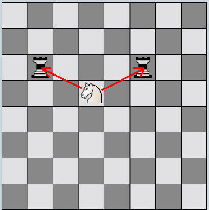
Opposizione:
una posizione dove i re si fronteggiano sulla stessa traversa,
fila o diagonale separati da un numero dispari di case.
Lopposizione si dice diretta se sono separati da una sola casa.
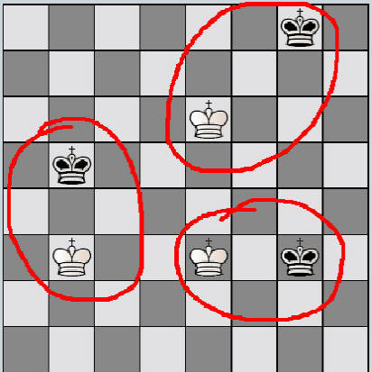
P
Patta:
pareggio tra i contendenti. Può avvenire per mutuo accordo tra
le parti, per insufficienza di materiale quando con i pezzi
rimasti in gioco non è più possibile dare scacco matto per
nessuna delle due parti, quando una identica posizione dei pezzi
è ripetuta 3 volte (regola della ripetizione delle 3 mosse),
quando si susseguono 50 mosse del bianco e 50 mosse del nero
senza nessuna presa (regola delle 50 mosse) e infine in caso di
stallo.
Pedone:
pezzo degli scacchi di minor valore, ve ne sono però 8 per
parte. Si muove soltanto in avanti di una casa. Diversamente
dagli altri pezzi mangia in modo diverso dal movimento: in
diagonale avanti di una casa. Lo spostamento è limitato dalla
presenza di altri pezzi che non possono essere scavalcati. La
presa en passant (vedi) è peculiare del pedone. Raggiunta
lultima traversa viene promosso ad un pezzo di maggior valore.
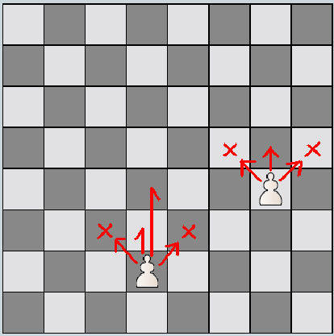
Pedone arretrato:
un pedone posto alla base di una catena di pedoni che non può
avanzare ne essere difeso da altri pedoni. E' una debolezza che
può venir facilmente attaccata.
Pedone doppiato:
Quando a causa di una presa un pedone si va a posizionare su una
colonna occupata da un pedone due dello stesso colore. In genere
questo è una debolezza in quanto i due pedoni non possono
difendersi a vicenda e si ostacolano l'un l'altro.
Pedone isolato:
un pedone che non ha pedoni amici nelle colonne adiacenti. Deve
venir difeso da pezzi maggiori e alla lunga può divenire una
debolezza.
Pedone passato:
un pedone che non può essere più ostacolato ne' minacciato da
pedoni avversari nella sua marcia verso la promozione in ultima
traversa (prima per il nero). Questo tipo di pedoni sono un
punto di forza specialmente se sono sostenuti da un altro pedone
o se sono lontani dal re avversario nei finali di pedoni e re.
Posizione:
disposizione dei pezzi sulla scacchiera. L'avere vantaggio di
posizione consiste nell'avere uno miglior sviluppo dei pezzi, la
sua quantificazione è piuttosto soggettiva a differenza del
vantaggio materiale.
Presa:
quando un pezzo effettuando un suo movimento consentito arriva
su una casa dove è posizionato un pezzo avversario questultimo
viene rimosso dal gioco e sostituito dal primo. L'unico caso in
cui una presa viene fatta su una casa diversa da quella di
arrivo del pezzo è la presa al passo (en passant).
Presa al passo:
modo di presa proprio del pedone quando è posto in quinta
traversa (quarta per il nero) nel caso che l'avversario spinga
di due case il pedone di una delle due colonne adiacenti. Il
pedone mangia in diagonale spostandosi in sesta (terza per il
nero) traversa sulla colonna del pedone mangiato. Quindi questo
è l'unico caso in cui una presa non avviene sostituendo il pezzo
preso con il proprio. Questa mossa deve avvenire nella mossa
immediatamente successiva alla spinta doppia altrimenti non sarà
più possibile.
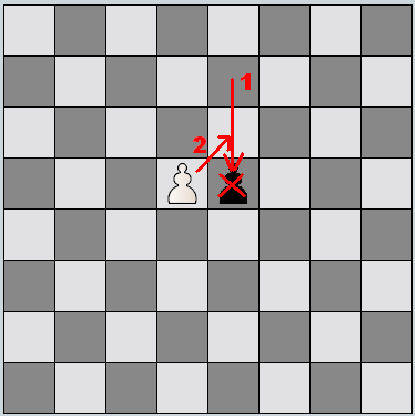
Primo giocatore:
il giocatore che conduce i pezzi bianchi e muove per primo.
Promozione:
mossa che porta un pedone dalla settima all'ottava ed ultima
traversa. Il pezzo in questione viene "promosso" cioè
trasformato in un altro pezzo (ad eccezione del re) scelto del
possessore del pezzo. Quindi il pedone non può rimanere tale ma
viene di solito trasformato in regina o raramente in cavallo
(sottopromozione).
Punteggio ELO:
un sistema per classificare la forza di un giocatore di scacchi,
prende il nome dal suo inventore.
Q
Qualità:
la qualità è un valore di materiale equivalente a due pedoni.
Vincere la qualità significa cambiare un cavallo o un alfiere
per una torre. Infatti la torre in materiale vale come 5 pedoni
contro i 3 di cavallo e alfiere.
R
Re: il
più importante pezzo degli scacchi che ha valore inestimabile in
quanto la sua caduta con lo scacco matto determina la sconfitta.
Si muove di una casella in tutte le direzioni, lo spostamento è
limitato dalla presenza di altri pezzi che non possono essere
scavalcati. La mossa di arrocco è, in collaborazione con la
torre, una sua peculiarità.
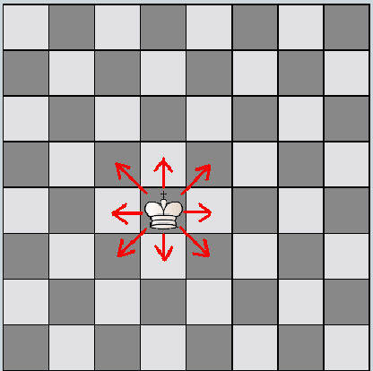
Regina:
pezzo degli scacchi che vale approssimativamente 9 pedoni. Si
muove sulle diagonali, sulle colonne e sulle traverse, lo
spostamento è limitato in distanza dalla presenza di altri pezzi
che non possono essere scavalcati.
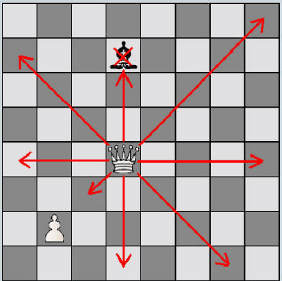
Re nudo:
detto di posizione in cui uno dei due giocatori rimane soltanto
con il re.
S
Sacrificio:
offerta di un pezzo all'avversario senza un immediato compenso,
per preparare un attacco od una combinazione di mosse. Il
sacrificio si rivela fondato soltanto se a lungo termine porta a
riguadagnare materiale o allo scacco matto.
Scacco:
minaccia (di presa) diretta sul re avversario. Il re non può
essere catturato per cui si dovrà rispondere allo scacco in uno
dei seguenti modi:
- interposizione di un pezzo tra re e pezzo che dà lo scacco
(non è possibile nel caso che lo scacco sia dato da un cavallo)
- cattura (presa) del pezzo che da scacco
- muovere il re in una casa di fuga
Se non è possibile nessuno di questi tre modi per mettere fuori
dallo scacco il re lo scacco è matto.
Scacco di scoperta:
scacco dato rimuovendo un proprio pezzo che ostruiva la linea
d'attacco di un altro sul re avversario. Questo tipo di scacco è
pericoloso in quanto l'avversario alla mossa successiva deve
occuparsi dello scacco e non può controbattere eventuali minacce
portate dal pezzo che si è mosso scoprendo lo scacco.
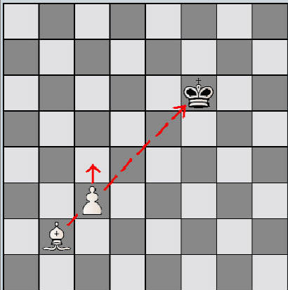
Scacco doppio e di scoperta:
è uno scacco di scoperta in cui il pezzo che scopre lo scacco dà
a sua volta scacco. L'unico modo che ha il re nemico di
fronteggiare due scacchi contemporanei è quello di muoversi in
una casa di fuga.
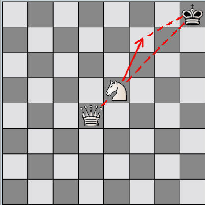
Scacco matto (matto):
avviene quando non è possibile togliere dallo scacco il re. La
vittoria va al giocatore che ha dato scacco matto.
Scacco perpetuo:
modo di ottenere la patta dando scacco in modo continuo al re
avversario senza che sia possibile interrompere la serie di
scacchi.
Secondo giocatore:
il giocatore che conduce i pezzi neri e muove per secondo.
Simultanea:
esibizione di scacchi dove un giocatore di notevole spessore
sfida contemporaneamente numerosi avversari di livello inferiore
su altrettante scacchiere.
Sovraccaricato:
detto di pezzo che deve svolgere contemporaneamente più compiti
difensivi.
Spingere:
far avanzare un pedone su una colonna.
Stallo:
posizione in cui non ci sono mosse legali (ad esempio nel caso
di un giocatore con il solo re che non lo può muovere senza
metterlo sotto scacco). La partita viene dichiarata patta.
Strategia:
il piano a lungo raggio per la partita
Sviluppo:
manovra di un pezzo verso una casa dove risulta più efficace.
T
Tattica:
piani e mosse che portano vantaggio a breve termine.
Tempo:
equivalente a mossa (i pezzi infatti si muovono ritmicamente tra
una mossa e laltra). Si guadagna un tempo quando l'avversario
fa una mossa inutile o ripete una mossa invece di sviluppare il
gioco. Guadagnare tempi permette di migliorare la propria
posizione.
Torre:
pezzo degli scacchi che vale approssimativamente 5 pedoni. Si
muove lungo le colonne e lungo le traverse, lo spostamento è
limitato in distanza dalla presenza di altri pezzi che non
possono essere scavalcati. La torre è necessaria per la mossa di
arrocco del re.
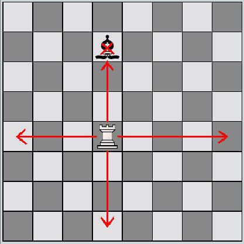
Trappola:
una mossa la cui naturale risposta risulta molto svantaggiosa
per chi la fa.
Traversa:
linea di case poste orizzontalmente. Vengono indicate con i
numeri da 1 a 8 nella notazione algebrica.
Z
Zeitnot:
termine tedesco che significa senza tempo. Indica la parte di
partita temporizzata quando ormai rimane poco tempo di gioco al
giocatore.
Zugzwang:
termine tedesco che significa costretto a muovere. Indica una
posizione in cui qualsiasi tratto faccia il giocatore che ha la
mossa indebolisce la propria posizione o perde materiale.
Zwischenzug:
termine tedesco che significa mossa intermedia. Detto di mossa
che viene fatta nel mezzo di una combinazione che sembrava
forzata e che migliora la posizione di chi la fa.